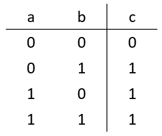

or_gate(
input a,b,
output
;
assign c = a | b
endmodule
What is the module name?
What is the symbol of the or operator in Verilog?
 The truth table:
The truth table:

or_gate( input a,b, output ; assign c = a | b endmodule What is the module name? What is the symbol of the or operator in Verilog?